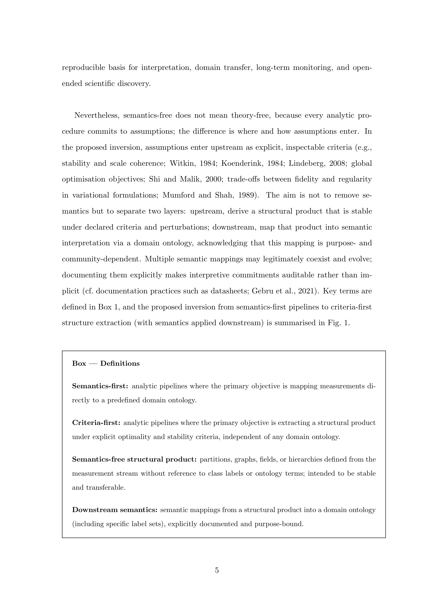
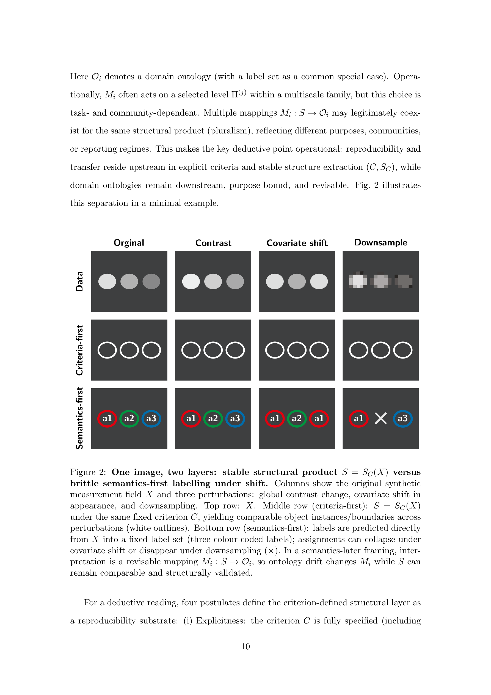

저자: Jan Bumberger | 날짜: 2026-02-17 | arXiv: 2602.15712 | 분야: cs.CV

Figure 1
이미지 기반 과학 분석에서 지배적인 "semantics-first" 패러다임(측정 데이터를 도메인 특화 라벨/온톨로지에 직접 매핑)의 근본적 한계를 지적하고, "criteria-first, semantics-later"라는 연역적 전환을 제안하는 개념 논문이다. 명시적 최적화 기준(robustness, scale coherence, compressibility, global consistency)으로 의미론과 무관한 구조적 산출물(structural product)을 먼저 추출하고, 도메인 온톨로지로의 의미 매핑은 하류에서 별도로 수행함으로써 재현성, 도메인 전이, 장기 모니터링을 가능하게 하는 통합 프레임워크를 제시한다.

Figure 2
총평: Image-based science에서 "구조 추출을 의미 부여와 분리해야 한다"는 원칙을 cybernetics와 정보이론에 근거하여 체계적으로 논증한 시의적절한 개념 논문이다. 8개 도메인에 걸친 cross-domain evidence와 FAIR Digital Object로의 연결은 인상적이나, 순수 이론적 논문으로서 경험적 검증의 부재가 가장 큰 한계이다. AI4Science 관점에서 foundation model 시대에 "어디에 이론을 넣을 것인가"라는 근본적 질문을 제기한 점에서 가치가 있으며, 향후 구체적 실험과 도구 구현이 뒷받침된다면 영향력이 클 수 있는 프레임워크이다.